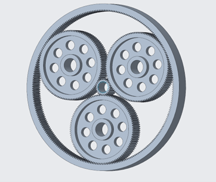
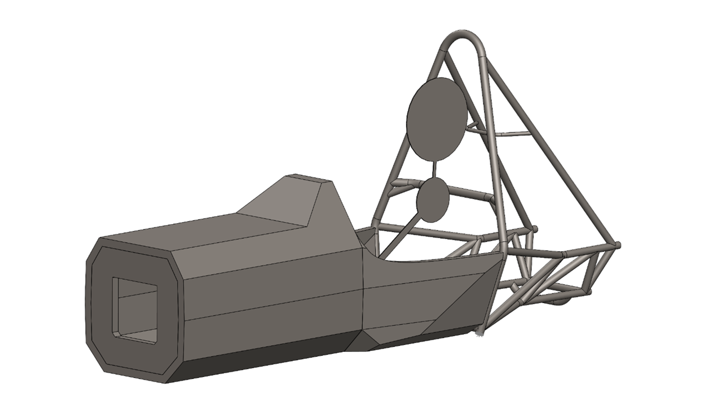
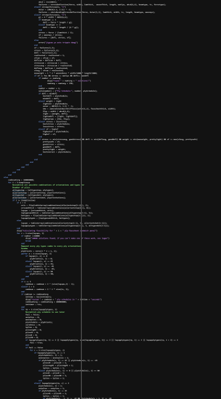
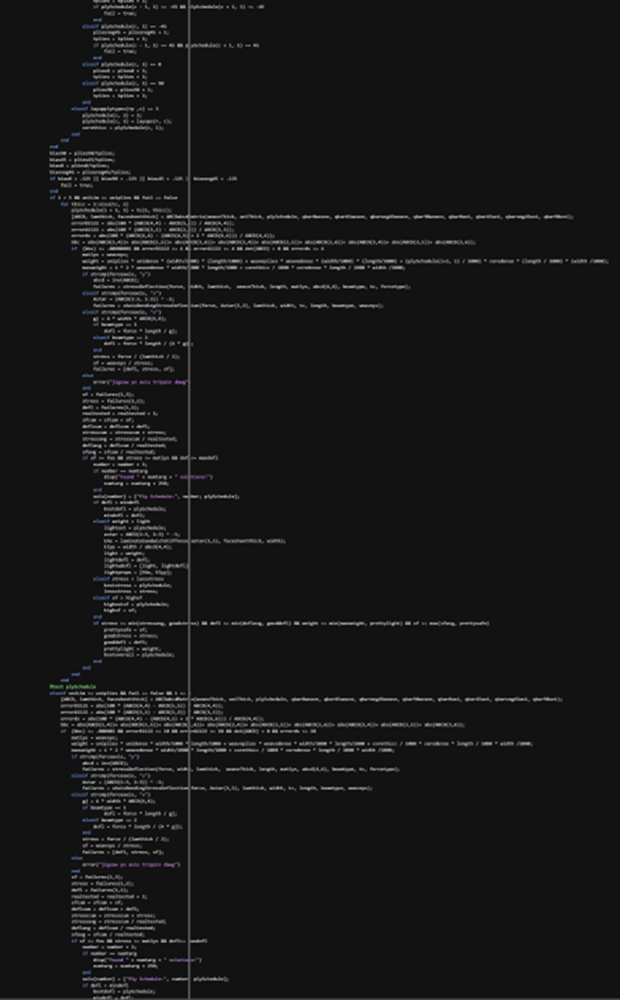
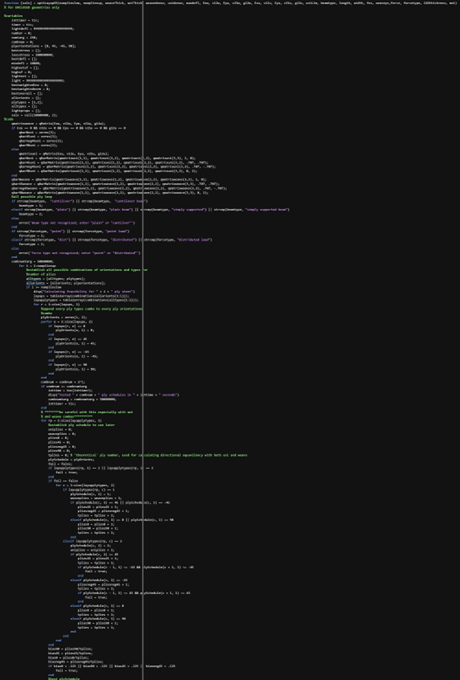
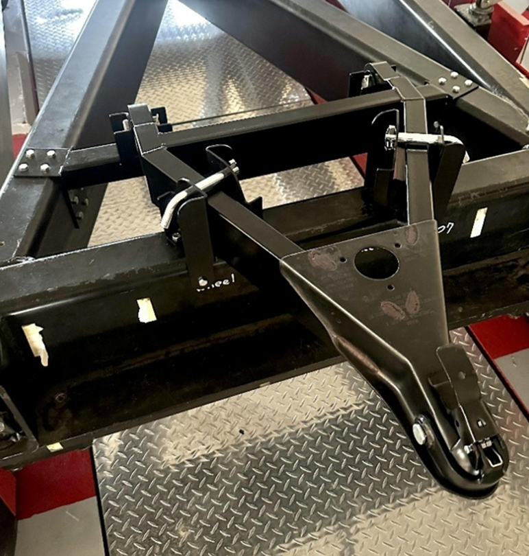
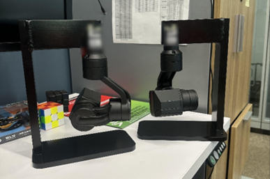

Logan Connelly’s Engineering Portfolio
Design Projects are projects wherein I designed and, most often,
manufactured the resulting component/assembly.
A brace intended to be placed between the two rear wing supports
(struts) to improve lateral stiffness as well as minimize vibrations from the
ride frequency of the car.
Analysis:
-
Performed Modal
Analysis to ensure that the cross-brace would minimize vibrations in the rear
wing as much as possible
o
Used ride frequency
from Vehicle Dynamics team to then target three times said frequency (as per
general dampening “rule of thumb”) to practically eliminate primary vibrations
of the rear wing.
-
Used basic parallel
axis theorem principles to calculate effective bending stiffness of the rear
wing struts to then ensure that the cross-brace adds sufficient lateral
stiffness such that the rear wing does not deflect in a cornering scenario.
-
Used basic carbon
fiber tube bonding qualities to maximize bond strength such that the
cross-brace did not fail in tensile loading conditions
Design:
-
Modeled and
assembled tube and inserts in Creo and ensured compatibility with chosen clevis
and rod end (Fig1.1)
-
Included
turnbuckle-like threaded attachments for adjustment of brace length to account
for tolerance stackups in both the rear wing struts and the cross-brace itself
-
Provided properly
dimensioned and toleranced engineering drawing to machinist such that the tube
inserts could be milled and lathed accurately
Retrospective:
-
The biggest point of
failure in this design was the choice to only use one effective brace rather
than an “X” design. This resulted in additional unexpected loads being
transferred through the rear wing main element and the rear wing struts. To
avoid this in future designs, the design/stiffnesses of the other members in an
assembly must be accounted for especially when using an asymmetrical design.
Documentation:
Fig1.1; Creo
Parametric model of the rear wing cross-brace

Fig1.2; Engineering
drawing for tube inserts
Conceptual gearbox
with the purpose of evaluating possible switch to single stage planetary
gearbox as well as to ring-gear output from planetary output.
Design:
-
Targeted 12:1
reduction ratio as instructed by Vehicle Dynamics Subteam.
-
Used KISSsoft to
design conceptual gearbox seen below for trade study
o
This design
direction was not chosen and thus these were not implemented
Retrospective:
-
The incredibly small
module of the gears at just .550mm; this would have made these gears relatively
weak and would have made them extremely expensive to manufacture. In future
designs, this is an oversight that will not occur.
-
These gears are also
difficult to package with a ring gear outer diameter of 6.11in. Taking into account upright, hub, carrier, and brake rotor
and caliper packaging, that diameter would have been much too difficult to
accommodate resulting in the decision not to move forward with a single stage
gearbox
Documentation:

Fig 2.1; KISSsoft
step model imported to Creo
A jig to invert the monocoque mold to make the manufacturing
process easier; this was also my first foray into design/CAD/engineering.
Design:
-
Used the rough
height, length, and width parameters given by Chassis Subteam Lead to create
model in Creo; designed with the intention of using 80/20 profile extruded
aluminum
-
Created individual
45°, 90°, 180° and 60° brackets to retain the 80/20 aluminum in the desired
position
Retrospective:
-
The biggest
oversight in this design was the lack of knowledge. Being a freshman in college
and not having any STEM programs in high school, I did not know what
deflection, stress, and simply supported beams were so, looking back, the only
analysis and proof that it could support the structure was that it was
intentionally overdesigned because I knew I did not know everything. Having
learned stress and deflection principles, under full load the jig would have
deflected approximately .028in and would have had a maximum stress of 5100psi,
~5 times less than the 25000psi yield strength.
Documentation:

Fig3.1; Jig in use
while manufacturing the monocoque

Fig3.2; Creo
Parametric Model (without brackets)
Mounts for several components (AIRS, isometer, safety board, HV
Active Light, and HV fuse) in the High Voltage Battery.
Design:
-
Designed
3D-printable mounts given the dimensions of the various components
o
Ensured that all
mounts could be bonded/positively retained within the HV battery case
Documentation:

Fig4.1; HV Light,
Fuse, and Isometer/Safety Board mounts*
*I do not have
access to the CAD of these mounts anymore and this is the only screenshot I
have
Currently performing preliminary design of a half-monocoque to
prove feasibility of switch to half-monocoque chassis for 2027 season
Analysis:
-
Used MATLAB carbon
fiber panel sizing solver (discussed on Page 10-11) to size Side Impact
Structure (SIS) and floor panels to approximate thickness of chassis panels in order to ensure geometric rules compliance
-
Strictly analyzed
Formula SAE 2026 Rules to ensure full rules compliance particularly in bulkhead
placement, cockpit opening sizing, and cockpit passthrough sizing.
-
Minimized weight by
minimizing size in accordance with rules (particularly in making the SIS
exactly 290mm as according to rule F.7.5.1.)
-
Utilized design for
carbon fiber manufacturing particularly in minimizing radii as round features
are difficult to achieve with aluminum honeycomb core without having
anticlastic curvature
-
Utilized design for
carbon fiber manufacturing in including 2° draft angles along planned mold
parting line (seen in Fig5.1)
-
Length determined
via using driver template (seen in Fig5.1) and by including 5-inch clearance
for pedal assembly
Design:
-
From approximate
carbon fiber sandwich panel sizing, designed a rough monocoque geometry for
proof-of-concept to support switch to half-monocoque chassis in 2027
-
Used sketched
cockpit and driver templates in SolidWorks to ensure geometric rules compliance
Planned Next Steps:
-
This project was
unfortunately deemed not worth it while there are other areas of the car to
optimize and because of the exorbitant cost of materials
Documentation:

Fig5.1; SolidWorks
monocoque assembly with 2025 rear-subframe
Code to optimize carbon fiber plate/sandwich panel in accordance
with user’s desired properties
Code Structure:
-
Initialize analysis
by computing every possible combination of ply orientations (0, -45, 45, 90 in
accordance with general carbon fiber manufacturing practices) and cores
depending on desired number of plies (either per facesheet or whole plate) as
input by user
-
Gradually eliminate
possible layups by determining overall DFM, presence of bend-bend coupling
(typically results from an asymmetrical layup but can also be minimal in
asymmetrical layups, so analysis via presence of B-Matrix, the part of the ABCD
matrix that defines bend-bend coupling properties), wrapping of unidirectional
plies in weave plies, absence of unidirectional plies directly next to core,
desired safety factor, desired maximum deflection in loading case
-
Return lightest
layup, layup with the highest safety factor, layup with the least stress, layup
with the least deflection, and the layup with the best combination of those
four factors that can all achieve the user’s desired properties
-
Added implementation
of bending about all axes as well as point and distributed loads. Also made it
such that the type of beam and load can be text inputs rather than numerical
representations.
Optimization for
Run-Time Minimization:
-
Check for properties
not requiring ABCD matrix calculation that disprove a layups feasibility first
as ABCD matrix calculation was initially one of the most computationally
intensive processes
-
Split ABCD matrix
calculation and abcd matrix calculation as MATLAB’s matrix inversion
calculation (at least for a 6x6 matrix) is extremely computationally intensive.
Checks for bend-bend coupling and rough quasi-isotropic qualities occur prior
to abcd calculation as abcd matrix is only needed for stress/deflection
calculations.
-
ABCD matrix
calculator, a separate function, also optimized for runtime as much as
possible.
-
RESULT: improved run
time from 366,000 layups per second to ~6,000,000 layups per second.
Self-Improvements:
-
This was about my 8th
function in MATLAB, previously writing the functions used within this function,
but the first that was this complex. Additionally, Artificial Intelligence was
used very minimally as it was incapable of troubleshooting the code
successfully, resulting in 600 hand-coded and -troubleshot lines.
Documentation:

Fig6.1; optiLayup
Pt1

Fig6.2; optiLayup
Pt2

Fig6.3; optiLayup
Pt3

Fig6.4; optiLayup Pt4
Code to optimize carbon fiber components with enclosed obscure
shapes using estimated moment of inertia; primarily for the purpose of the
Aerodynamics Subteam to estimate airfoil layups then validate using AnsysACP
Code Structure:
-
Initialize analysis
by computing every possible combination of ply orientations (0, -45, 45, 90 in
accordance with general carbon fiber manufacturing practices) and cores
depending on desired number of plies as input by user
-
Gradually eliminate
possible layups by determining overall DFM, wrapping of unidirectional plies in
weave plies, absence of unidirectional plies directly next to core, desired
safety factor, desired maximum deflection in loading case; an important note here
is that the check for bend-bend coupling was eliminated as an enclosed
component will always have a ‘symmetrical’ layup as the skin makes a loop
-
Uses estimated MoI
and layup’s elastic modulus (1/(A*11 * laminate thickness)) to
approximate bending stiffness to then get the lightest, least stressed, highest
safety factor, least deflecting, and best overall layups that meet the user’s
specifications as with the original optiLayup
Self-Improvements:
-
This was originally
a very hastily made function using a constant moment of inertia until I
remembered that the main mode of carbon fiber resisting deflection is the
parallel axis theorem, a.k.a. a varying MoI based on thickness of the laminate.
This extreme oversight and then fixing it reminded me that, while progress is
important, progress is also only important if the work being done is
useable/accurate.
Documentation:

Fig7.1: optiLayupOS
Pt1

Fig7.2; optiLayupOS Pt2
Performing analysis of gear ratios using previously coded
acceleration simulation
Code Structure:
-
From user-input
ranges for each gear, perform acceleration simulation for every gearbox in .01
ratio increments for every given range
-
Return time and
gearbox of fastest simulated acceleration event
General Concepts
Utilized:
-
Included shift
times, rough tire model, longitudinal load transfer, aerodynamic downforce and
drag, engine torque curve, anti-squat geometry (though no such geometry was
present on the car that the model is based on), maximum longitudinal tire
force, final drive, gearshifts, launch control, and indications for
power-limited points Vs. traction-limited points
Planned Next Steps:
-
This project is on
the backburner currently in favor of composites projects.
Documentation:

Fig8.1; Gearbox
optimization code
Smaller/non-design projects (testing, assembly, general tasks) not
shown
*This project is under an NDA; information allowed to be provided
is extremely limited
Design:
-
Independently
designed fully functional product prototype from initial rough sketch from
superior
-
Implemented several
key design changes which significantly improved functionality/weight
Result:
-
Prototype was
demonstrated with full functionality to Vice President of both the company and
the engineering department
Trailer hitch mount was requested by senior engineer to facilitate
maneuvering of 2-ton rolling chassis via forklift
Analysis:
-
Determined load from
A-frame hitch on intended crossbeam to size bolts and supporting plates.
-
Determined necessary
clearance for front pin mounts to allow A-frame to tilt backwards as per design
criteria
Design:
-
Used existing
rolling chassis model to model mounts for A-frame trailer hitch in Creo
-
Used model to
produce engineering drawings to provide to both waterjet operator and welder
-
Used stress analysis
to apply safety factor of 2 to entire design
Result:
-
Installed finished
components on rolling chassis
-
Able to be lifted
and bounced by forklift without failure
-
Reduced necessary
manpower from 5 people to manually move chassis to only 1 with a forklift
Documentation:

Fig9.1; mounts for
A-frame trailer hitch installed on rolling chassis
A gimbal test stand to facilitate the process of debugging for
software engineers; again, details able to be shared are very limited due to
NDA
Design:
-
Used existing gimbal
geometry to successfully design improved latching mechanism from prior design
-
Implemented latch
from McMaster-Carr into design for ease of assembly/manufacturing
-
Produced engineering
drawings to manufacture several components myself and to have the base and the
assembly water-jetted and welded, respectively
Result:
-
Stands successfully
held gimbals firmly in place
Retrospective:
-
Latch design could
have been improved, 3D-printed component of latch broke upon rigorous testing;
printed in with better layer-line orientation to resolve issue (initially
wanted better print quality of different features, hence ‘wrong’ orientation)
Documentation:

Fig10.1; Gimbal
Mounts
A stand to test the ultimate strength of a plastic rack and pinion
for an upcoming project*
*This project is under an NDA and thus information able to be
shared is limited
Design
-
Used existing
aligner components to create a base for the gears
-
Designed bracing and
a stand to clamp to a welding table to then add weights to the components and
test the strength
General mechanical Assembly/Repair experience from automotive work
*Mechanical experience from FSAE is omitted

Fig12.1; Trailer
Model
-
Modeled 49ers Racing
gooseneck trailer as quick favor for a friend in Graphic Design.
Repairs:
-
Replaced wheel
bearings
-
Replaced valve cover
gaskets
-
Replaced driver-side
steering knuckle
-
Replaced front lower
ball joints
-
Replaced front sway
bar end-links
-
Restored all front
brake pins
-
Replaced exhaust
manifold
-
Replaced rear door
lock actuator
-
Replaced EGR valve
-
Cleaned fuel
injectors and replaced seals
-
Diagnosed and
repaired clogged midpipe catalytic converter
Maintenance:
-
Multiple oil changes
-
Replaced spark plugs
-
Replaced ignition
coils
-
Replaced air filter
-
Brake pad
replacement
Repairs:
-
Diagnosed and
replaced faulty O2 sensor
-
Replaced seized rear
brake caliper and performed brake system bleed
-
Replaced damaged
charge pipe
o
Performed thorough
inspection of intake system for metal fragments
Maintenance:
-
Multiple oil changes
-
Cleaned throttle
body
-
Tightened boost
couplers after one failed under boost